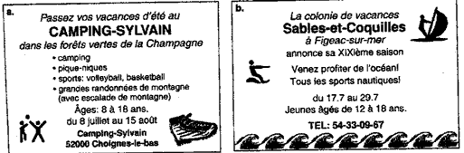

FLF
201 Révision: Examen III, Unité
3
I. Partie Orale
A. Écrivez le chiffre (numeral) que vous entendez dans chaque phrase.
1.
2.
3.
B. Scènes. Vous allez entendre cinq phrases. Écoutez bien chaque
phrase et déterminez à quel titre (headline) elle se réfère.
Ensuite encerclez la lettre qui correspond au titre. Chaque phrase sera répétée.
a. Embouteillage cause collision de 28 voitures
b. Vol chez M. le Maire de Charlieu: Perte d’objets d’art
c. Château de Montmorency endommagé par feu
Modèle:
| 1. | a | b | c |
| 2. | a | b | c |
| 3. | a | b | c |
| 4. | a | b | c |
| 5. | a | b | c |
II Partie écrite
I. A. Traduction (pour Cyrano)
1. He fell in love with her. (to fall in love=tomber amoureux/euse de).
2. She fell in love with him.
3. He wrote her letters and poems.
4. She didn't know that he loved her.
B. Répondez aux questions par des phrases complètes.
1. Quel temps fait-il aujourd'hui?
2. Qu'est-ce que vous faisiez tous les jours quand vous étiez jeune?
3. Où étiez-vous hier soir à 8 heures?
4. Qu'est-ce que vous allez faire ce weekend?
5. Où est-ce que vous aimez vous promener?
6. Où est-ce que vous préférez passer les vacances?
C. Qu'est-ce que ces personnes ont fait pendant leurs vacances? Complétez
les phrases suivantes avec le passé composé du verbe entre
parenthèses.
1. (aller) Catherine et Nicole ________________ à la montagne.
2. (faire) Marc ________________ de la pêche.
3. (voyager) Nous ________________ avec des amis.
4. (acheter) Stéphanie ________________ un beau tableau.
5. (s'amuser) Isabelle
et Eric ________________ au bord de la mer.
6. (voir) Tu ________________ des monuments historiques.
7. (avoir) Vous ________________ le mal de mer?
8. (prendre) Je ________________ l'avion.
9. (choisir) Jean-François ________________ un séjour linguisitque
en Italie.
10. (descendre) M. et Mme Morot ________________ dans un hôtel de luxe.
D. Complétez les phrases suivantes avec l'imparfait des verbes
entre parenthèses.
1. (faire) Il ________________ du soleil.
2. (ne jamais/manger) Ils ________________________________ de viande.
3. (être) Elle ________________ très sympathique.
4. (avoir) Nous ________________ un grand chien.
5. (dormir) Je ________________ 8 heures par jour.
6. (aller) Tu________________ souvent au musée.
7. (nager) Nous ________________ chaque semaine.
8. (vouloir) On ________________ faire un voyage.
9. (commencer) Marie ________________ ses études.
10. (conduire) Vous ________________ une voiture de sport à l'époque.
E. Mettez le paragraphe suivant au passé. Choisissez entre le passé composé et l'imparfait.
Ce ________________ (1. être) vendredi, et Charles ________________ (2.
décider) d'inviter son
amie Charlotte à aller au cinéma. Il ________________ (3. téléphoner)
à Charlotte pour lui
demander si elle
________________ (4. vouloir) voir un film français. Elle ________________
(5. répondre)
que oui. Charles
________________ (6. aller) chercher son amie à six heures
et demie. Charlotte ________________
(7. ne pas/être) prête. Il ________________ (8. se faire)
tard. Les deux amis ________________ (9. quitter) la maison à sept heures et quart. Quand ils
________________ (10. arriver) enfin au cinéma, il y ________________ (11. avoir) beaucoup
de gens devant
le guichet.
F. Passé simple
Dans le passage suivant les verbes au passé simple sont soulignés. Écrivez l'infinitif et le passé composé de ces verbes.
Marie Curie naquit en Pologne mais elle vécut en France. Elle fut la première femme professeur à la Sorbonne, la prestigieuse université de Paris. Elle épousa Pierre Curie en 1895. Elle devint célèbre parce qu'elle découvrit le radium. Elle reçut deux prix Nobel.
passé simple |
infinitif |
passé composé |
| elle naquit | ||
| elle vécut | ||
| elle fut | ||
| elle épousa | ||
| elle devint | ||
| elle découvrit | ||
| elle reçut |
G. Le Témoin.
Imaginez que vous avez vu cet accident de voiture. Vous racontez ce que vous
avez vu à la police. Écrivez 5 phrases. Utilisez le passé composé et l'imparfait.
Vocabulaire utile
| le lampadaire: the street light | le coin de la rue: the street corner |
| le chauffeur a pris la fuite: hit and run | le chauffeur: the driver |
| le croisement: the intersection | heurter: hit, bump |
| écraser: to run over (kill) | rouler, aller: to go (for a car) |
| renverser: to run over (injure) | traverser: to cross |
1.
2.
3.
4.
5.
H. Lecture: Lisez chacun de ces documents. Puis répondez aux questions
suivantes en écrivant la lettre du document qui correspond à la
bonne réponse.

1. ___ Dans quelle colonie de vacances allez-vous si vous voulez faire de la
planche à voile?
2. ___ Dans quelle colonie de vacances peut-on faire de l'alpinisme?
3. ___ Dans quelle colonie de vacances se promène-t-on dans les bois?
4. ___ Dans quelle colonie de vacances peut-on apprendre à faire de la
plongée sous-marine?
On your own
•Culture
Répondez aux questions: (pp. 140-141)
1) Que signifie la "Renaissance"?
2) Comment était le roi François 1er?
3) Qui a peint la Joconde?
4) Qui a regné pendant Le Grand Siècle?
5) Pourquoi est-ce qu'on donnait le nom de "Roi-Soleil?" à Louis XIV?
6) Combien de personnes vivaient à Versailles?
Écrivez une phrase en français pour chaque nom.
Amboise
Chambord
Chenonceau
Fontainebleau
François Ier
La Joconde
La Renaissance
Le Grand Siècle
Le petit Nicolas
Louis XIV
Versailles
•Voyage au pays francophone:
Vous allez parler de votre pays francophone. 1. Quels pays francophone avez-vous
recherché? 2. Quel temps fait-il en hiver? (2 phrases) 3. Quel temps
fait-il en été? (2 phrases) 4. Quelles activités est-ce
qu'on peut faire en vacances dans ce pays? Écrivez 5 phrases.
Maintenant, imaginez que vous êtes en vacances dans ce pays. Écrivez six phrases où vous décrivez le temps et vos activités.